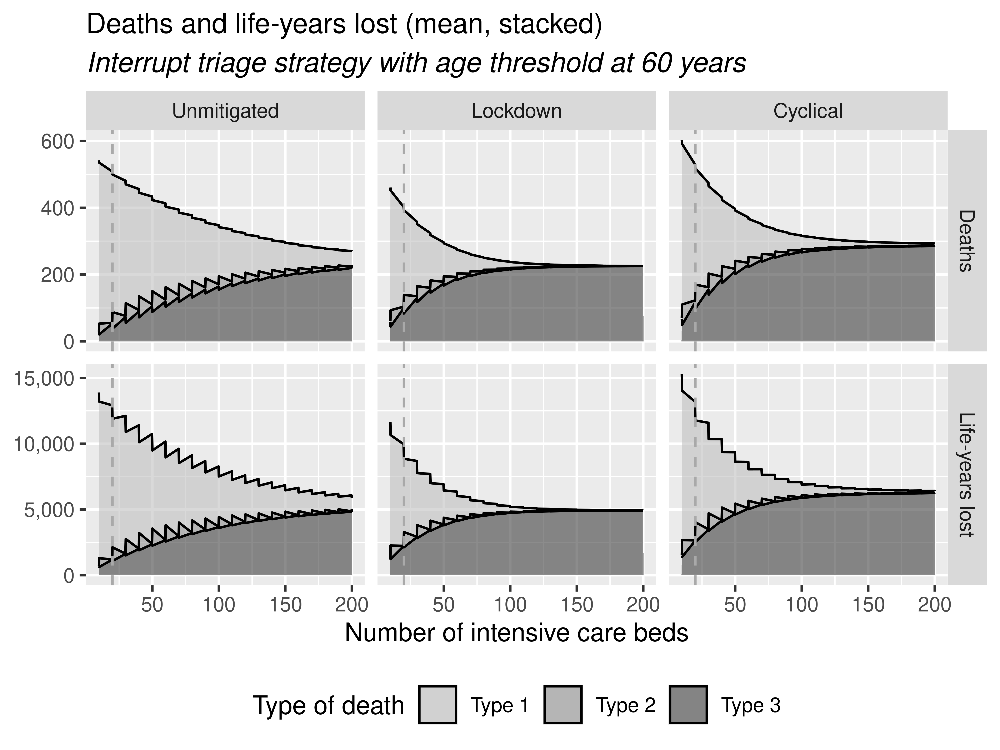

Processsed results from run, reproducing all items. Total reproduction time used: 3h 50m (9.6%). Evaluation of repository (badges, STARS, and started STRESS-DES). Evaluation time used: 23m.
09.29-09.32, 11.00-11.40, 11.47-11.50, 11.54-11.57: Process results from full run on remote machine
Run time
I made a script run_time.R to pull all the time.txt files and combine them to find the total run time. I found the total run time was 48.42 hours - so 48 hours 25.2 minutes.
As in the article, the simulation was for a 20-bed intensive care unit, but then sensitivity analysis of running ward sizes of 10 to 200 beds. Just looking at the time for 20 beds, that was 2.05 hours - so 2 hours 3 minutes
fig4_fig5_fig6_tbl3.R
Amended file paths (as already set up at start, very handy!) -
setwd("xxx")
folder_name<-"xxx/results/"
And also amending the save paths (as those were default to save to current working directory).
I realised it required outp_raw. I hadn’t synced all the raw files with GitHub due to their size. I checked the size of the file from capacity 20 and found it was 2.38Gb - far too large to upload! I tried compressing the file:
gzip -f outp_raw.csv
This reduced the size to 129Mb, which is over the file size limit of 100 MiB. I would need to use Git Large File Storage to track this on GitHub. As this is the only raw file required (and doesn’t require those from sensitivity analysis), I decided to set this up with LFS. To do this I first installed Git LFS:
However, when pulled onto my local machine, I found that the file size was only 1M (unlike on remote machine where the zipped file is 129M). I realised this is because I need to do a specific git fetch for the LFS files.
git lfs fetch --all
git lfs pull
I then ran fig4_fig5_fig6_tbl3.R. It was a bit slow to create outp_raw due to the size of the file (so taking about 2/3 mins ish to run the R script).
I looked over the images, easily confirming at 11.55 that all were reproduced. All of these looked to have been exactly reproduced (with table 3 referring to table 4).
Timings for these items
import syssys.path.append('../')from timings import calculate_times# Minutes used prior to todayused_to_date =121# Times from todaytimes = [ ('09.29', '09.32'), ('11.00', '11.40'), ('11.47', '11.50'), ('11.54', '11.57')]calculate_times(used_to_date, times)
Time spent today: 49m, or 0h 49m
Total used to date: 170m, or 2h 50m
Time remaining: 2230m, or 37h 10m
Used 7.1% of 40 hours max
12.04-12.27, 13.20-13.57: fig7.R
Amended the file paths. This was set up assuming someone had folders like "/final results/capacity - fig7/zresults_cap",x,"/outp_agg.csv", and zresults_lockdown_cap. Hence, it appears these were seperate csv files. In my case, I have folders for each capacity, then within outp_agg, it has the results from each scenario (unmitigated, lockdown, cyclical) and policy and so on.
# Get list of outp_agg.csv file paths
files <- list.files(path = "outputs", pattern = "outp_agg.csv", full.names = TRUE, recursive = TRUE)
# Get capacity from the folder name
capacity <- as.numeric(sapply(strsplit(files, split="_", fixed=TRUE), function(x) (x[2])))
# Import the csv files, adding column with capacity
csv <- lapply(seq_along(files), function(i) {
df <- read.csv(files[[i]])
df$cap <- as.numeric(capacity[i])
return(df)
})
# Combine into a single dataframe
comb_csv <- do.call(rbind, csv)
# Sort by capacity (as original study imported in loop of seq(10,200,10))
dat <- comb_csv[order(comb_csv$cap),]
I then ran the script, and Figure 7 looked similar, except all the lines are jagged rather than smooth.

I tried adding stat="smooth" to geom_area(), which smoothed the lines but created a weird dip in the lockdown charts that didn’t otherwise exist.
I hoped to check their GitHub commit history for any alternatives, but there was none (just file upload). I also checked the article, but that doesn’t mention the smoothing.
I tried a few different smoothing methods - lm, glm, gam (big drop at end).
I tried setting na.rm=TRUE or FALSE, and fullrange=TRUE, which made no difference.
I checked the plot without applying facet_grid() and found that it looked correct. Hence, I tried some tweaks to facet grid. I tried making the plots manually/seperately, but the issue remained.
I filtered the dataset to the Lockdown Deaths for 150+ ICU beds to check the values look correct, and saw no issues - it shouldn’t be dropping to 0.
I removed the lines from geom_area(), which then just leaves the smoothed filled areas, and then you find no issue with the lines. Hence, ignoring the absense of a black line, I would then say these to be reproduced, having removed the weird glitch from the line from smoothing.
Timings for this item
import syssys.path.append('../')from timings import calculate_times# Minutes used prior to todayused_to_date =121# Times from todaytimes = [ ('09.29', '09.32'), ('11.00', '11.40'), ('11.47', '11.50'), ('11.54', '11.57'), ('12.04', '12.27'), ('13.20', '13.57')]calculate_times(used_to_date, times)
Time spent today: 109m, or 1h 49m
Total used to date: 230m, or 3h 50m
Time remaining: 2170m, or 36h 10m
Used 9.6% of 40 hours max
Untimed: Git push
Trying to push this, I had an error that I couldn’t push as there was a large file, even though I’d set up tracking, but this large file was pulled and beame part of a merge commit.
But that did not fix it. I wondered if the issue was that I hadn’t also tracked .gitattributes. Following this stack overflow post, I fixed the issue by running:
git lfs migrate import --include="outp_raw.csv.gz"
git add .gitattributes outp_raw.csv.gz
git commit -m "Migrate large file to Git LFS"
15.32-15.44: Badges evaluation
Moving onto evaluation before consensus, as have done previously.
License set to “no” as kindly add on request from us.
For “complete” I set to “yes” as I feel it is reasonable to say this had all the material needed - the only tiny thing was that Figure 7 plot was not smoothed - but given literally everything else was provided, I think it is very reasonable to mark this as having “complete” information. They also included full_results.zip with the agg results from each capacity scenario.
I was “uncertain” on “structure”, as it has seperate scripts for model, running model and creating plots. But it all just in one main folder. I looked back at prior evaluations for any guidance. For Shoaib 2022, Tom advised to consider not if it is good enough for replication, but if it is good enough for reuse (e.g. does it hve hard-coded parameters). Based on this previous advice, I decided to mark this as “unmet” for structure as -
No comments in code or documentation to guide reuse.
Pretty much all parameters are hard-coded - it has been designed for use for this application, and would require a bunch of changes to allow it to be altered without hard coding.
However, I did want to commend that it did make efforts to be adaptable to be re-run in different working directories (with setwd() blank at the top, and then getwd() used for later file paths).
15.45-15.47: STARS evaluation
16.35-16.44: STRESS-DES evalution
Timings for evaluation
import syssys.path.append('../')from timings import calculate_times# Minutes used prior to todayused_to_date =0# Times from todaytimes = [ ('15.32', '15.44'), ('15.45', '15.47'), ('16.35', '16.44')]calculate_times(used_to_date, times, limit=False)
Time spent today: 23m, or 0h 23m
Total used to date: 23m, or 0h 23m